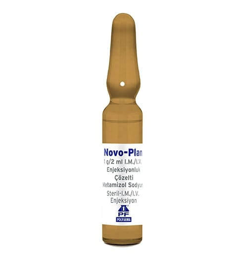

Novo-Plan 1 g/2 ml I.M./I.V. Enjeksiyonluk Çözelti, 10 Ampul

Ne için kullanılır
KT · Bölüm 1NOVO-PLAN, metamizol sodyum etkin maddesini içerir. Bir ampul içinde 1 g metamizol sodyum vardır. Bir ampul içinde 2 mL çözelti bulunur ve çözeltinin 1 mL’sinde 500 mg etkin madde bulunur. 10, 50 ve 100 adet ampul içeren ambalajlarda kullanıma sunulmuştur.
NOVO-PLAN, pirazolon grubuna ait ağrı kesici ve ateş düşürücü olarak kullanılan bir ilaçtır.
NOVO-PLAN aşağıdaki durumların tedavisi için kullanılır: - Yaralanma veya cerrahi sonrası ani gelişen (akut) şiddetli ağrı - Kramp benzeri karın ağrısı (kolik) - Kansere bağlı ağrı - Başka bir tedavinin mümkün olmadığı diğer akut veya kronik şiddetli ağrı - Diğer önlemlere yanıt vermeyen yüksek ateş
NOVO-PLAN enjeksiyonluk çözelti yalnızca, diğer formlarla (tablet, şurup veya oral damla) tedavinin mümkün olmadığı durumlarda kullanılmalıdır.